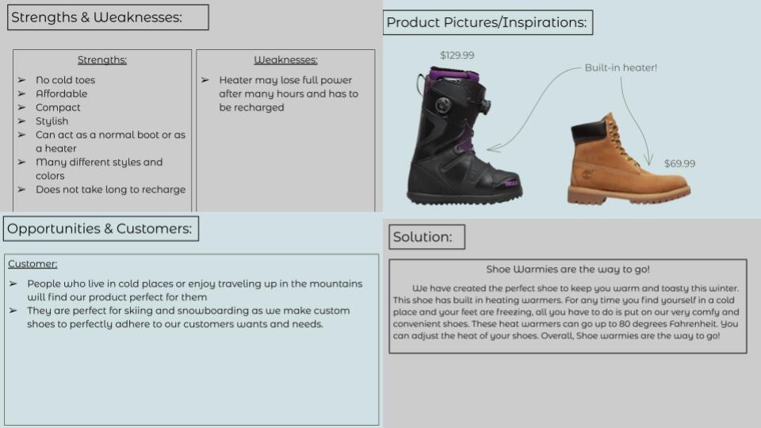

Jeseca's Website!
Into into Engineering

8/25/23 - This is my first journal entry. Today in class we did a challege using marbles and pipes and the challenge was to get the marble all the way to the bucket using only the pipes to getthe marble through. During this challenge, I learned that it takes many attempts to make soomething be sucessful. I also learned that workig as a team is very important in making a project.
9/11/23 - When staring this project, my group and I decied in a design for our Rube Goldburg Machine. After we decided on a design, we worked together to CAD our machine. Then, we started to draw out all the parts by measuring all the different peices of the machine on carboard and started to cut them out.
9/15/23- Today we fininished buliding our Rube Goldburg Machine and we tested it out today. During the proccess of building, our design was very effecient because on how organized we were during the process. For example, we measured and drew out al the different parts of our machine before we cut or put anything together.When we tried our machine after it was all done, it sucessuflly poped the balloon on our first try as we hoped it would and took a video and a picture of the final result!

9/29/23- Today is our last day learning about computer engineering. Computer engineering is a combination of electrical engineering and computer science. For our computer engineering project, we completely took apart a computer while learning about the different parts that go into a computer as well as how it functions.During this process, I learned that a computer´s functions are very complicated and many things go into a computer such as a motherboard, storage, audio, GPU, CPU, ect...

10/6/23- Today in class, we learned about bioengineering and made a prosthetic hand that can hold a water bottle. At first, our design was to make a hand with no fingers, however, it did not take long for us to realize that it was not working at all whatsoever. Then we designed another hand which could be more efficient so that we could lift the water bottle. We had some help from Cathrine who generously helped complete our second design. After we were done with our hand, we tried it out and it successfully worked.
10/20/23- Today in class, we tested out our rocket that we made for our aerospace engineering unit. Before we built this rocket, we used TinkerCAD to design our rocket. When we built this rocket, we used a 2 liter bottle, cardboard, paper, and hot glue. We designed our rocket to have parallelogram shaped wings and a cone at the top. When we tested our rocket, it went pretty high.
10/26/23- Today in class, we designed a water filter for our environmental engineering project. For this project, we could use bottles, cotton, sand, big and small rocks. My partner and I had an idea to place the cotton at the bottom of the bottle, then put the sand, small rocks, and finally big rocks. We did this so that the big particles of filthy water would get filtered first using the pebbles and slowly making the water clear. We put our water in the filter a few times and it made more and more progress.

11/3/23- Today in class, we learned many things about electrical engineering. For our assignment, we had to create a few circuits on TinkerCAD. On TinkerCAD, we had to make three light bulbs light up using resistors, a bread and a battery. We connected the positive parts of the battery to the positive parts of the breadboard and the negative part of the battery to the negative part of the breadboard.


11/13/23- Today in class, we did our project on Electrical Engineering. For this unit we used bread boards, LED lights, wires, and resistors to turn on a light in different ways. Some ways we turned on the light was using one resistor to turn on one light. Then, we tried turning on 3 lights using 3 resistors. After that, we had a challenge to turn on 3 lights using only one resistor. Lastly, the last lab (lab 4) we had to make the lights blink by coding them.
12/5/23- Today in class, we learned about business engineering and we did a project where we would have to create a product and create a presentation with many types of information. Some include the customers, negatives, positives, other company competitions, strengths and weaknesses of the product etc... For my group, we decided to make a product called "Shoe Warmies." Shoe Warmies are boots that have a built-in heater to keep your feet cold in very cold places so that your feet don't feel numb. We put that our main customers would be people living in very cold areas for people going on vacation where there is snow.
12/12/23- Today in class, we learned about civil engineering and we made a project. Our project for this unit was to design and build a 2 feet bridge using only 40 pieces of spaghetti and wood glue. The challenge was to see how much water each bridge would hold. During this project, we made a first version of an idea of what our bridge can look like and when we tested it out we noticed its flaws and we made a final bridge. When making our final iteration of our bridge, we took into consideration the things that went wrong with the other bridge and we fixed it. Overall, my group's bridge held a bit more than a full cup of water.

1/12/24- Today in class, we learned about Chemical Engineering. Our project for this unit was to make OObleck. Our Challenge was to add the right amount of water to the cornstarch. When we made our cornstarch, we did not add enough water and our OObleck turned out to be very hard and it was very hard to mix up and break apart.